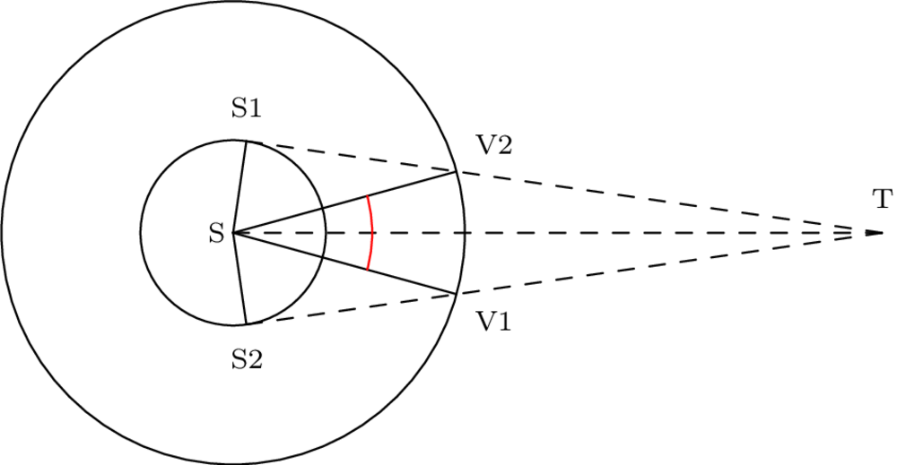

Problema 7¶
Estimar la duración de un tránsito de Venus sobre el Sol visto desde la Tierra. El tamaño aparente del disco solar es de 32’ y el periodo sidéreo de Venus es de 224.7 días.
Solución¶
La geometría del problema puede verse en la siguiente figura (no está a escala).
Los puntos S1 y S2 representan los bordes del limbo solar vistos desde la Tierra. Ambos puntos son móviles, pero en todo momento el Ángulo en S1 es de 90º.
Al principio del tránsito Venus se encuentra en la posición V1 y finaliza cuando se encuentra en la posición V2. Ambas posiciones son móviles y se desplazan sobre la órbita de Venus con la velocidad orbital angular de la Tierra.
Denominamos \(2\theta_0\) al ángulo \(\widehat{V_1SV_2}\) (marcado en rojo). Cuando Venus se encuentre en V1, empieza el tránsito y termina cuando alcance V2. La posición angular de V2 será:
Con \(n_{\oplus}\) la velocidad angular de la Tierra.
Mientras que la de Venus será:
Con \(n_V\) la velocidad angular de Venus.
El tránsito termina cuando \(\theta_{V2} = \theta_V\). Igualando:
Con lo que:
Insertando la definición de \(n_{\oplus}\) y \(n_V\) tenemos:
La expresión en el denominador no es más que el periodo sinódico de Venus:
Falta calcular el ángulo \(\theta_0\).
Dado que el tamaño del disco solar es \(\phi\)=32” y el ángulo en S1 es 90º, el ángulo \(\widehat{S_1ST}\) será 90º - \(\phi / 2\).
El ángulo \(\gamma = \widehat{S_1V_2S}\) puede calcularse como:
Pero el semidiámetro solar es
Por lo que
El ángulo \(\widehat{S_1SV_2} = 90 - \gamma\) y por tanto
Con el que podremos calcular la duración del tránsito.
import astropy.units as u
import numpy as np
import matplotlib.pyplot as plt
import math
# Empezamos calculando el periodo sinódico
P_T = 365.25 * u.day
P = 224.7 * u.day
P_S = abs(1 / (1 / P_T - 1 / P))
print("Periodo sinódico:", P_S)
Periodo sinódico: 583.9322305229456 d
# La velocidad angular (en radianes por día) es
n = 2 * math.pi * u.rad / P_S
print('Velocidad angular', n)
Velocidad angular 0.01076012759486255 rad / d
# El disco del Sol en radianes
theta = 32 *u.arcmin
sin_g = 1 / 0.723 * np.sin(theta / 2)
gamma = np.arcsin(sin_g)
theta_0 = gamma - theta / 2
print('Ángulo recorrido por Venus durante el tránsito (grados):', (2*theta_0).to('arcmin'))
Ángulo recorrido por Venus durante el tránsito (grados): 12.26017356030636 arcmin
t = 2 * theta_0 / n
print(t.to('hour'))
7.954567215186817 h